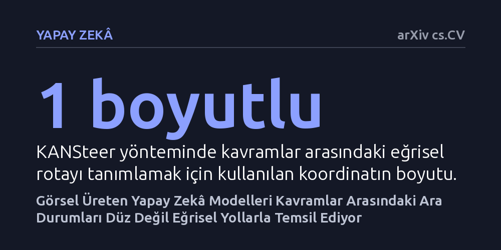

YAPAY-ZEKA · arXiv cs.CV · 2026-10-08
Araştırmacılar, metinden görsel üreten modellerin ara kavramları doğrusal hatlar üzerinde mi yoksa eğriler halinde mi temsil ettiğini inceledi. Modellerin ara durumları düz çizgilerden sapan eğrilerle kodladığı ve eğrisel rotalar kullanan yeni yöntemin çok daha tutarlı geçişler sağladığı gösterildi.
Yapay zekânın kavramları basit düz doğrular yerine karmaşık eğriler halinde anladığını göstererek modelleri anlama ve yönlendirme biçimimizi sınıyor.

Yapay zekâ modellerinin iç dünyasını anlamaya çalışan araştırmacılar, uzun süredir doğrusal temsil hipotezi adı verilen bir kurala dayanıyordu. Bu kabule göre, yapay zekânın zihninde kavramlar iki nokta arasındaki dümdüz bir doğru gibi sıralanır; örneğin güneşli bir havadan fırtınalı bir havaya geçerken aradaki tüm adımlar sadece fırtınanın şiddetinin azar azar artmasından ibarettir.
Ne var ki gerçek dünyadaki görsel dönüşümler bu kadar basit ve düz bir mantıkla işlemez. Güneşli bir gökyüzü ile fırtına arasında, birkaç beyaz bulutun süzüldüğü dingin bir ara hava durumu bulunur. Benzer şekilde, bir tırtıl kelebeğe dönüşürken sürekli kanatları büyüyen tuhaf bir tırtıl olarak ilerlemez; kozaya girerek bambaşka bir biyolojik aşamadan geçer. Yazarlar, görsel üreten modellerin de bu doğal ara basamakları doğrusal hatlar üzerinde tutamayacağı şüphesiyle yola çıktı.
Araştırma ekibi, metinden görsel üreten modern difüzyon transformatörü modellerini incelemeye aldı. İki uç kavram arasındaki ara nitelikleri doğrudan metin komutlarıyla modele sorduklarında, modelin iç katmanlarındaki sinyal hareketlerinin başlangıç ve bitiş noktalarını birleştiren düz hat üzerinde kalmadığını tespit ettiler. Aktivasyonlar neredeyse her zaman bu doğrudan belirgin biçimde sapıyordu.
Bu sorunu çözmek ve modelin iç yapısını bozmadan ara durumları yakalamak için KANSteer adını verdikleri yeni bir yaklaşım önerdiler. Bu yaklaşımda, kavramlar arası geçiş düz bir hat yerine bir eğri olarak modelleniyor. Araştırmacılar, bu eğriyi temsil etmek için hem basit hem de matematiksel olarak açıklanabilir olan Kolmogorov-Arnold Ağları'ndan yararlandı. Bu ağlar tek boyutlu bir koordinat üzerinde öğrenilen fonksiyonlarla geçiş rotasını tanımladı.
Çeşitli görsel kavramlar üzerinde yürütülen deneyler, yapay zekâ modellerinin içsel temsil rotalarının düz çizgilerden kuvvetli bir biçimde saptığını netleştirdi. Modeli düz bir hat boyunca zorlayarak yönlendirmek, ara basamaklarda yapay, tutarsız ve kavramın doğasına uymayan ara görsellerin oluşmasına yol açıyordu.
KANSteer yöntemi ise modelin kendi doğal eğrilerine çok daha yakın bir uyum sağladı. Bu sayede, iki kavram arasındaki ara aşamalarda çok daha pürüzsüz, görsel olarak mantıklı ve bozulma içermeyen nitelik geçişleri elde edildi. Üstelik bu işlem, modelin iç dinamiklerinin yorumlanabilirliğini kaybetmeden gerçekleştirildi.
Bu çalışma, yapay zekâyı içten yönlendirme tekniklerinde yıllardır sorgulanmadan kabul edilen doğrusal varsayımın yetersiz kaldığını gösteriyor. Modeller dünyayı sadece siyah ile beyaz arasında tek bir cetvel çekerek değil, farklı duraklara uğrayan kıvrımlı yollarla anlamlandırıyor.
Bulgular henüz bir önbaskı niteliğinde olsa ve az sayıda modelde denenmiş bulunsa da, yapay zekâ çıktılarının istenen yönde hassas bir şekilde yönlendirilmesi için gelecekte eğrisel mekanizmaların standart hale gelebileceğine işaret ediyor.